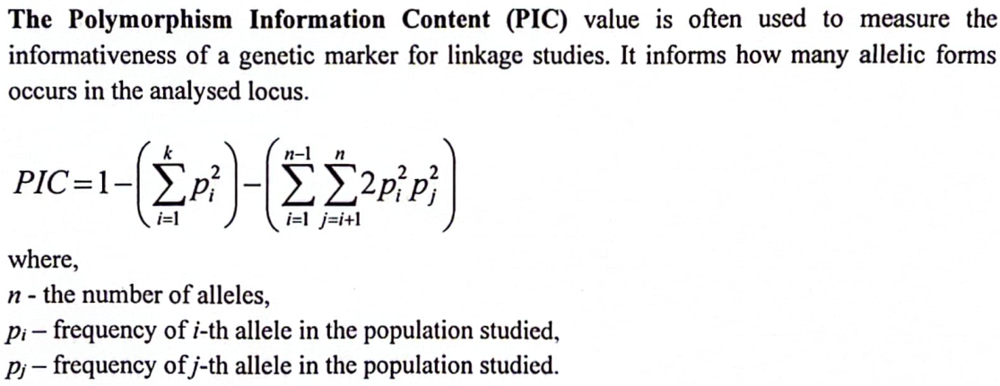

Genetic Management of Small Populations (Examples-Tasks)
Introduction
These Tasks have been created by Gabriela Cielen, MSc, PhD student (Department of Genetics and Animal Breeding - Poznan University of Life Sciences)
In this webpage I am trying not only to define some definitions based on her teaching slides in “Genetic Management of Small Populations” topic but also trying to solve the tasks included in the booklet she has created for this topic.
L1 L2 L3 L4 L5
Blue 0.1 0.2 0.3 0.35 0.05
Red 0.0 0.0 0.0 0.50 0.50
Green 0.2 0.2 0.2 0.20 0.20
Based on the formula we create the new column:
ex3 |>mutate(HET =1-(L1^2+L2^2+L3^2+L4^2+L5^2))
L1 L2 L3 L4 L5 HET
Blue 0.1 0.2 0.3 0.35 0.05 0.735
Red 0.0 0.0 0.0 0.50 0.50 0.500
Green 0.2 0.2 0.2 0.20 0.20 0.800
Exercise 4
Question
Based on the data in the table calculate PIC coefficient for each locus and each population.
Answer
We set each Locus for the alleles and populations
Now we can create a function to do the formula fo us:

# PIC_3 stands for a function to calculate PIC when we have 3 allelesPIC_3 <-function(x,y,z) {return(1-(x^2+y^2+z^2)-(2*x^2*y^2+2*x^2*z^2+2*y^2*z^2) )}# PIC_2 stands for a function to calculate PIC when we have 2 allelesPIC_2 <-function(x,y) {return(1-(x^2+y^2)-(2*x^2*y^2) )}
Now we calculate PIC using our functions for each population:
Yellow:
PIC_3(0.86,0.12,0.02) #G1 (A,B,C)
[1] 0.2236963
PIC_3(0.32,0.37, 0.31)#G2 (1,2,3)
[1] 0.5905694
PIC_2(0.62,0.38) #G3 (K,L)
[1] 0.3601853
Orange:
PIC_3(0.80,0.11,0.09) #G1 (A,B,C)
[1] 0.313748
PIC_3(0.45,0.26,0.29) #G2 (1,2,3)
[1] 0.5729912
PIC_2(0.46,0.54) #G3 (K,L)
[1] 0.3733949
Black:
PIC_3(0.77,0.20,0.03) #G1 (A,B,C)
[1] 0.3176288
PIC_3(0.22,0.46,0.32) #G2 (1,2,3)
[1] 0.5638691
PIC_2(0.33, 0.67) #G3 (K,L)
[1] 0.3444296
Exercise 5
Question
Based on the data below calculate the genetic distances between all populations. The table shows the number of animals with each genotype.
Answer
First we create our table:
Population <-c("Brown Swiss", "Jersey", "Holstein-Friesian")AA <-c(50,200,100)Aa <-c(100,100,200)aa <-c(50,100,200)ex5 <-data.frame(Population, AA,Aa,aa)ex5
Population AA Aa aa
1 Brown Swiss 50 100 50
2 Jersey 200 100 100
3 Holstein-Friesian 100 200 200
In goose population were 1163 individuals noted as founders and 248 indivituals moted as ancestors. In the table below were listed inbreeding coefficients and number of males and females registered in 22 years. Based on the data in the text and in the table calculate the rate of inbreeding and effective population size for each year and bottleneck effect for this population.
Answer
We create the table for the first step:
Year <-c(1990,1991,1992,1993,1994,1995,1996,1997,1998,1999,2000,2001,2002,2003,2004,2007,2008,2009,2010,2011,2012,2013)Inbreeding_coefficient <-c(0.000,0.000,0.000,0.000,0.001,0.004,0.021,0.028,0.016,0.013,0.034,0.018,0.021,0.016,0.021,0.027,0.029,0.030,0.033,0.039,0.048,0.046)Males_N <-c(198,262,255,196,182,283,291,33,131,119,61,120,6,23,135,81,32,41,56,25,12,293)Females_N <-c(171,282,228,191,165,212,257,45,124,108,45,125,12,38,128,77,34,45,63,58,26,245)ex9 <-data.frame(Year, Inbreeding_coefficient, Males_N, Females_N)ex9